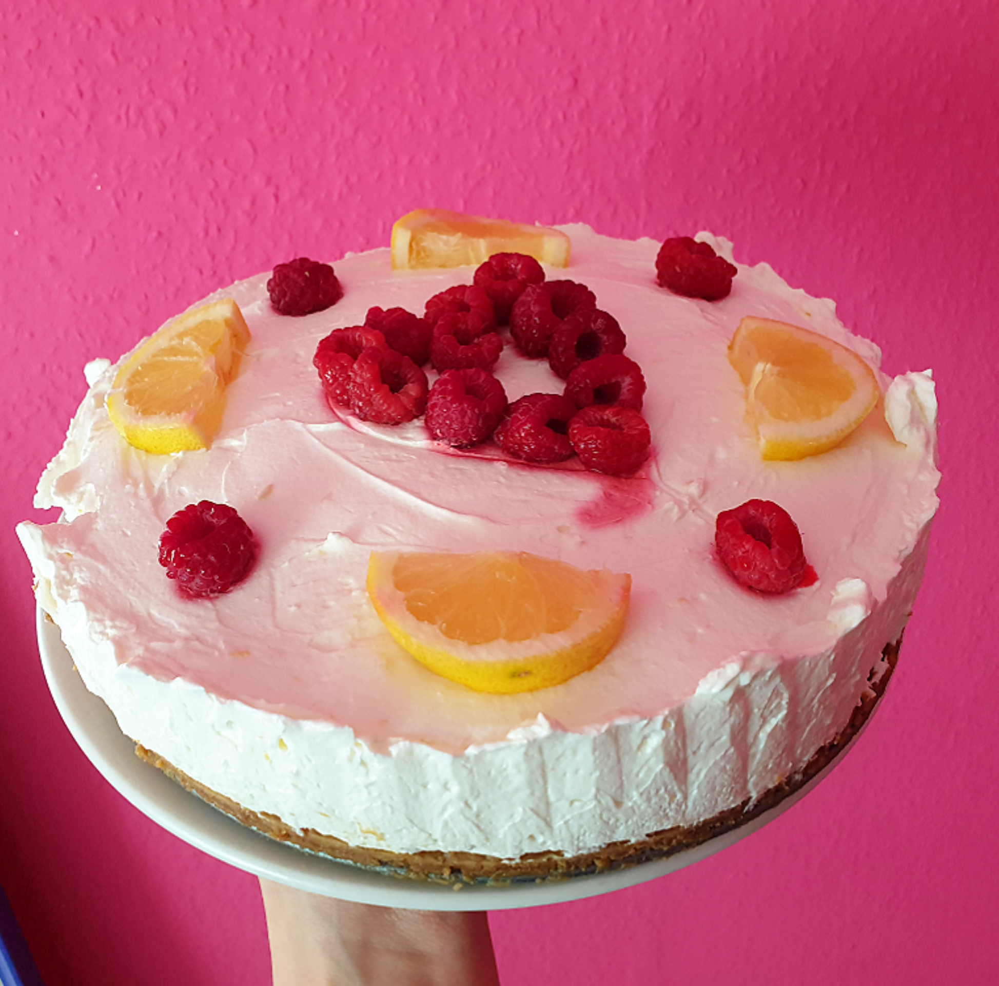
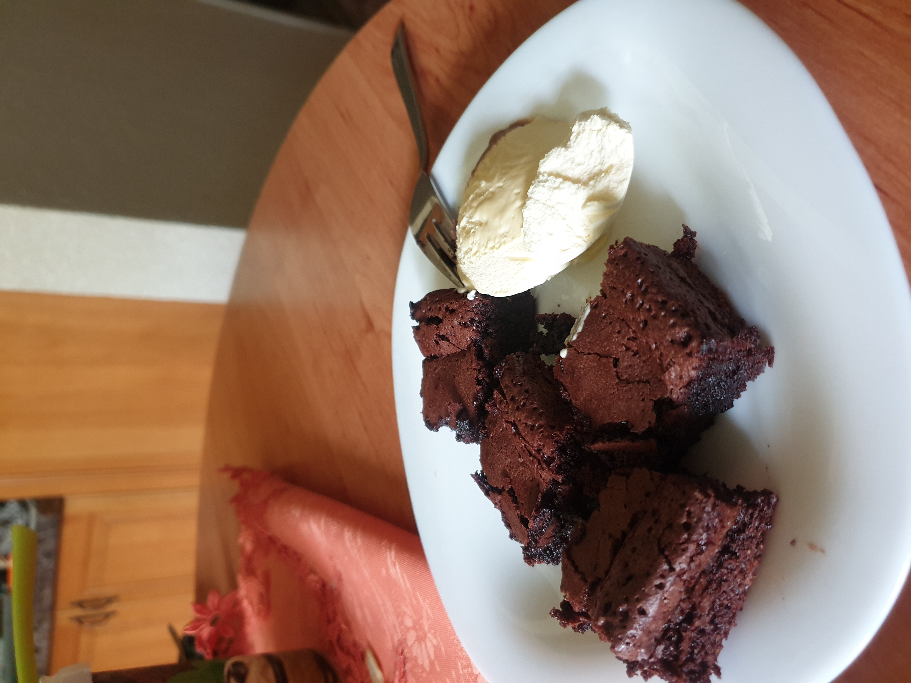

-
Cheesecake

Cheesecake is my favourite dessert, and i also enjoy making it, because it's really easy , and no-bake , which makes it pretty fast.
-
Brownie

Jamie Oliver's brownie recipe is the best, and easiest way to make brownie, you should really try this recipe!
(Click on "Brownie" above the picture!) -
Chocolate chip muffin

I rarely make muffins, but they taste delicious, and they're also easy to make.
-
Pie

I baked a pie for the first time in my life, and it was sooo delicious!